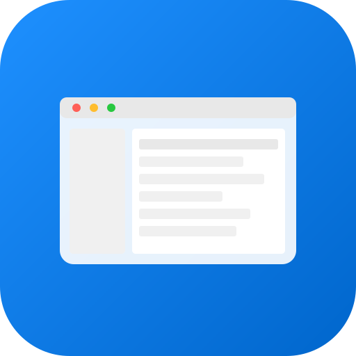
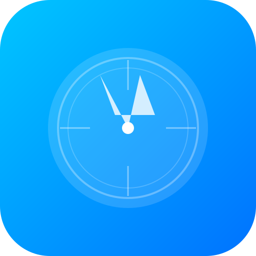
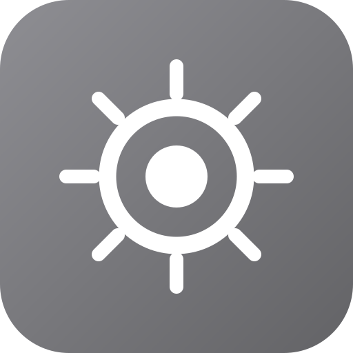
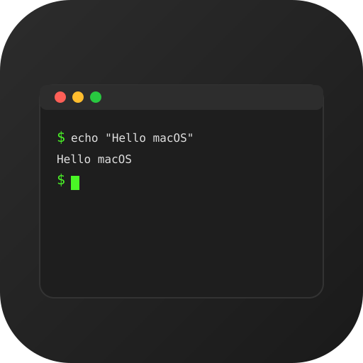
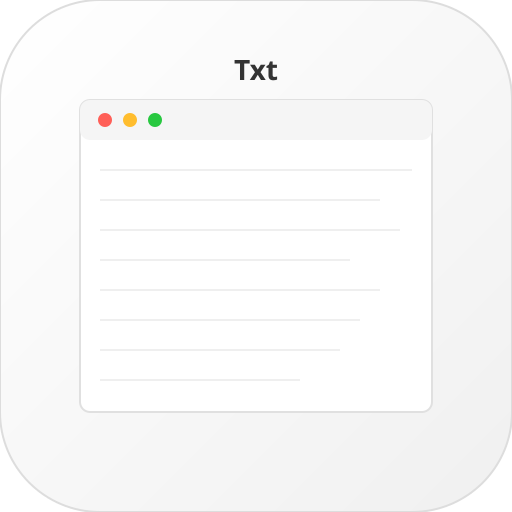

12:00
1月1日 星期一
用户
点击或按空格键解锁
正在关机...

Finder

Safari

系统设置

终端

文本编辑
备忘录
日历
照片
Finder
文件
编辑
显示
🔋 100%
📶
1月1日 周一 12:00
⛭
🔔
关于本机
系统设置...
App Store
最近使用的项目
强制退出...
⌥⌘⎋
睡眠
重新启动...
关机...
⌃⌘⏏
锁定屏幕
⌃⌘Q
退出登录...
关于 Finder
偏好设置...
⌘,
清倒废纸篓
隐藏 Finder
⌘H
隐藏其他
⌥⌘H
显示全部
退出 Finder
⌘Q
新建文件夹
⇧⌘N
新建标签页
⌘T
新建 Finder 窗口
⌘N
打开
⌘O
关闭窗口
⌘W
显示简介
⌘I
重新命名
压缩
撤销
⌘Z
重做
⇧⌘Z
剪切
⌘X
拷贝
⌘C
粘贴
⌘V
全选
⌘A
查找
⌘F
为图标
⌘1
为列表
⌘2
为分栏
⌘3
整理
整理方式
显示预览
显示边栏
📶
Wi-Fi
🔵
蓝牙
✈️
飞行模式
🌙
勿扰模式
🌙 显示器亮度
🔊 音量
🔍
Spotlight
📺
屏幕镜像
通知中心
清除全部
📅
日历
10分钟前
今天没有即将发生的事件
✉️
邮件
30分钟前
欢迎使用 macOS Web Desktop
⚙️
系统
1小时前
系统已更新到最新版本
🔍
Finder
Safari
终端
文本编辑
备忘录
日历
照片
系统设置